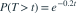
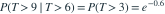

某设备的故障构成速率为每小时 0.2 次的 Poisson 过程。已知它连续 6 小时没有故障，再连续运行 3 小时仍无故障的条件概率是多少？
- A
- B
- C
- D
我已思考，展开答案与解析
正确答案：D
- 相邻故障之间的等待时间 T 服从速率为 0.2 的指数分布，其生存函数是

。 - 利用无记忆性，

。
易错提醒条件中已经经过的无故障时间不应再次计入未来生存时长。
南审 813 · 2026 · 一·2(1)，PDF第1页
从大题拆分考点并重新编写选项；数值或设问有调整。
查看参考来源